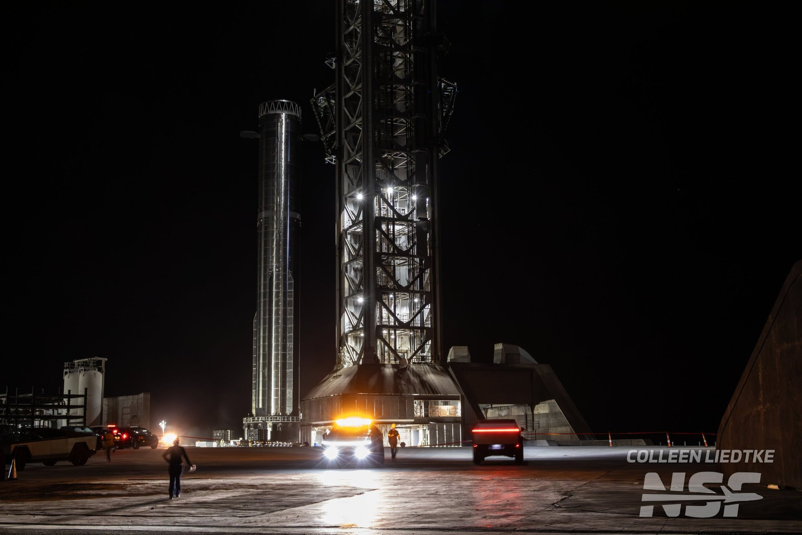
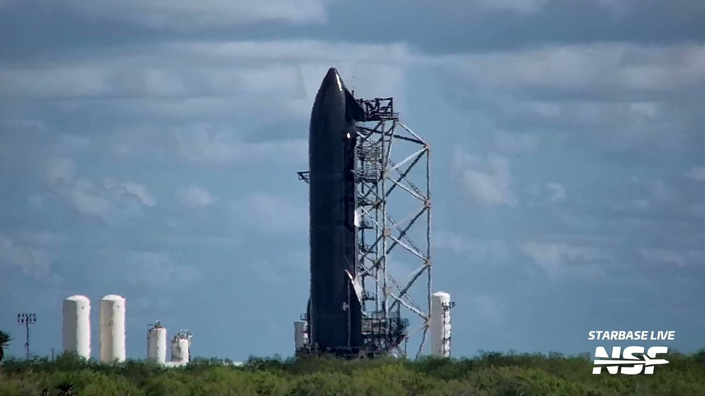

Sabato 24 ottobre 2026, dopo un trasferimento notturno lungo la strada che collega la fabbrica alla zona di lancio, Starship Booster 22 è arrivato al Pad 2 di Starbase, in Texas. Poche ore dopo le braccia meccaniche della torre lo hanno afferrato e posato sul supporto di lancio. È il passaggio che apre l’ultima fase di prove a terra prima di Flight 15, il volo con cui SpaceX vuole fare una cosa mai riuscita a nessuno: recuperare intero un razzo orbitale, primo stadio e stadio superiore, riprendendoli entrambi con la torre.
Che cosa è successo a Starbase
Il movimento è cominciato nella notte texana fra venerdì e sabato. Booster 22 è uscito dalla Mega Bay 1, l’enorme capannone dove i Super Heavy vengono assemblati e ricevono i motori, ed è stato portato lentamente lungo la Highway 4 fino al sito di lancio. Il convoglio, illuminato dalle luci dei mezzi di scorta, è arrivato al Pad 2 intorno alle 13:20 ora italiana di sabato, le prime ore del mattino in Texas.
Il passaggio più spettacolare è arrivato verso le 16 ora italiana: le due braccia della torre, che a Starbase tutti chiamano «chopstick», le bacchette, hanno abbracciato il booster, lo hanno sollevato e lo hanno posato sull’Orbital Launch Mount, la struttura su cui il razzo poggia al momento del decollo. Gli osservatori sul posto parlano di prove di accensione statica attese nei giorni seguenti, come parte della campagna che precede Flight 15.
Lo static fire è una prova semplice da descrivere e delicata da eseguire. Il booster resta ancorato al supporto, viene riempito di metano e ossigeno liquidi e accende i suoi 33 motori Raptor per pochi secondi, senza staccarsi da terra. Serve a verificare motori, impianti di alimentazione, software e la rampa stessa nelle condizioni più vicine a un lancio vero. Per Flight 15 la stessa prova dovrà superarla anche la Ship.

Perché Flight 15 è diverso dagli altri
Flight 14, il 28 settembre, è stato il primo volo di Starship a raggiungere l’orbita e ha rilasciato 26 satelliti Starlink V3 prima di ammarare. Il prossimo passo è riportare a casa anche lo stadio superiore. Nella teleconferenza sui risultati del terzo trimestre, il 20 ottobre, Elon Musk ha confermato che Flight 15 partirà a novembre e che SpaceX tenterà di riprendere con la torre sia il Super Heavy sia la Ship. «Se ci riusciamo, sarà la prima volta che un lanciatore orbitale viene recuperato completamente», ha detto, definendolo «una profonda pietra miliare tecnologica».
Musk ha anche dato una stima delle probabilità: un successo al primo tentativo è, parole sue, «più probabile che no». E ha messo le mani avanti: se Flight 15 non dovesse riuscire, SpaceX ha comunque «un flusso costante di tentativi di volo di Starship fino alla fine dell’anno». Durante la stessa diretta l’azienda ha mostrato un’animazione di circa ottanta secondi con la Ship che rientra in assetto orizzontale, si raddrizza sopra la costa di Starbase e scende fra le braccia della torre.
Il booster è già stato ripreso dalla torre in passato. La Ship no: torna dall’orbita a velocità molto più alte e, per tentare la presa, deve rientrare puntando verso terra invece che verso l’oceano aperto. È il motivo per cui serve un via libera specifico dell’autorità americana per l’aviazione. Gwynne Shotwell, presidente di SpaceX, ha spiegato che dopo un «confronto significativo e costruttivo con la FAA» l’azienda si aspetta che la licenza di Flight 15 «includa il ritorno al sito di lancio e la presa con la torre per entrambi gli stadi». È un’aspettativa, non ancora un documento firmato.

Il calendario: 8 novembre come prima data possibile
SpaceX non ha pubblicato una data. L’indicazione più precisa viene dai piani interni di Starbase ripresi da NASASpaceflight il 18 ottobre: la data più vicina possibile per Flight 15 è l’8 novembre. Musk, dal canto suo, aveva parlato il 10 ottobre di quattro-sei settimane e poi di un lancio «poco prima del Ringraziamento», che negli Stati Uniti quest’anno cade il 26 novembre. Le due indicazioni sono compatibili, ma nessuna è una finestra di lancio ufficiale.
Per rispettare quel calendario servono due static fire riusciti, uno per stadio. Quello di Booster 22 è il primo dei due. Sul fronte della Ship la situazione è meno lineare. Ship 42, assegnata a Flight 15 dai registri degli osservatori, a settembre era stata sollevata dalle braccia del Pad 2 in una prova di presa simulata. Poi, quando sembrava pronta per la propria accensione statica, le sono stati tolti i motori ed è tornata al sito di prova di Massey’s per un’altra prova criogenica.
SpaceX non ha spiegato il motivo. Una delle ipotesi riguarda il Raptor Vacuum che si era spento in anticipo durante Flight 14: Musk lo ha descritto come un difetto software del computer di quel singolo motore, un «glitch» che a suo dire non preoccupa e sarà semplice da correggere. Un’altra possibilità è che le modifiche fatte dentro i serbatoi richiedessero una nuova verifica a freddo. Finché la Ship non completa il proprio static fire, l’8 novembre resta un obiettivo, non una data acquisita.

Già si lavora a Flight 16
Mentre Booster 22 raggiungeva la rampa, a pochi chilometri di distanza Ship 43 si metteva al lavoro. Appena arrivata a Massey’s, venerdì 23 ottobre, ha affrontato più cicli di prove criogeniche per circa dieci ore, dal pomeriggio fino a notte. In queste prove i serbatoi vengono riempiti di liquidi a temperature bassissime, di norma azoto liquido, per verificare che la struttura regga pressioni e sollecitazioni termiche senza perdite.
Ship 43, insieme a Booster 23, è la coppia che gli osservatori associano a Flight 16. Booster 23 ha già completato la sua prova criogenica di dodici ore a metà ottobre ed è rientrato in Mega Bay 1 per l’installazione dei motori. Flight 16 è puntato a dicembre e potrebbe diventare il primo lancio di Starship dalla Florida, dal complesso 39A del Kennedy Space Center: in quel caso entrambi gli stadi dovrebbero viaggiare via mare sulla chiatta di trasporto di SpaceX. È un’ipotesi legata all’obiettivo di attivare la rampa entro fine anno, e dipenderà da come andrà Flight 15.
| Data | Veicolo | Che cosa succede |
|---|---|---|
| 28 settembre | Flight 14 | Primo volo orbitale di Starship, 26 Starlink V3 rilasciati, ammaraggio |
| metà ottobre | Booster 23 | Prova criogenica di 12 ore, poi rientro per i motori (candidato a Flight 16) |
| 20 ottobre | SpaceX | Musk conferma Flight 15 a novembre con doppia presa; animazione del catch della Ship |
| 23 ottobre | Ship 43 | Circa dieci ore di prove criogeniche a Massey’s |
| 24 ottobre | Booster 22 | Trasferimento al Pad 2 e sollevamento sul supporto di lancio |
| prossimi giorni | Booster 22 | Static fire atteso, non ancora eseguito |
| 8 novembre o dopo | Flight 15 | Prima data possibile nei piani interni; servono static fire della Ship e licenza FAA |
Che cosa aspettarsi adesso
I segnali da seguire sono tre. Il primo è lo static fire di Booster 22: un’accensione pulita e breve, senza bisogno di ripeterla, terrebbe il calendario di novembre a portata di mano. Il secondo è il ritorno di Ship 42 ai motori e alla propria accensione statica, il vero collo di bottiglia del momento. Il terzo è la licenza FAA, che dovrà autorizzare per la prima volta il rientro della Ship verso Starbase.
Sullo sfondo resta il ritmo che SpaceX dice di voler raggiungere: nella stessa teleconferenza Musk ha parlato di voli settimanali nella prima metà del 2027 e di due o più lanci a settimana entro la fine dell’anno prossimo. Per ora il 2026 si chiuderebbe con cinque voli di Starship, un numero basso dovuto anche al passaggio alla nuova versione del razzo. Il primo passo concreto, però, è quello visto sabato: un booster sulla rampa, pronto ad accendere i motori.
Il dossier sul briefing NASA dedicato ad Artemis e al ruolo di Starship passa all’archivio Notizie: questa pagina mette in primo piano la preparazione di Flight 15.
Fonti pubbliche e tracce
Ultimo aggiornamento editoriale: 25 ottobre 2026. Nel corpo non si ripete la fonte a ogni frase: le tracce sono raccolte qui. Gli orari sono convertiti in ora italiana (il 24 ottobre era ancora in vigore l’ora legale, UTC+2).
- NASASpaceflight su X, 24 ottobre 2026: Booster 22 esce dalla Mega Bay 1 per il trasferimento al sito di lancio; seguito con il passaggio sulla Highway 4.
- NASASpaceflight su X, 24 ottobre 2026, 11:21 UTC: Booster 22 arriva al Pad 2.
- NASASpaceflight su X, 24 ottobre 2026, 13:55 UTC: Booster 22 sollevato sull’Orbital Launch Mount del Pad 2.
- Elisar Priel (@ENNEPS) per NASASpaceflight, 24 ottobre 2026: «Chopstick Hug» e static fire atteso nei giorni seguenti, campagna pre Flight 15.
- Elisar Priel (@ENNEPS) per NASASpaceflight, 24 ottobre 2026: Ship 43 a Massey’s, più cicli di prove criogeniche per dieci ore.
- Colleen Liedtke per NASASpaceflight, 24 ottobre 2026: Booster 22 trasferito dal sito di produzione al sito di lancio, verso la campagna di static fire.
- NASASpaceflight, 18 ottobre 2026: data più vicina possibile 8 novembre; motori rimossi da Ship 42 e nuova prova criogenica; glitch del Raptor Vacuum; Booster 23 e Ship 43 per Flight 16, dicembre e ipotesi LC-39A; cinque voli Starship nel 2026.
- Teslarati, 21 ottobre 2026: animazione del catch della Ship, citazioni di Musk e Shotwell dalla teleconferenza del 20 ottobre (piena recuperabilità, probabilità, licenza FAA, voli settimanali nel 2027), Flight 14 e prova di presa simulata di Ship 42.
- Teslarati, 21 ottobre 2026: Flight 15 confermato a novembre nella teleconferenza sui conti.
Fotografie utilizzabili
Non esistono ancora foto a licenza libera dell’arrivo di Booster 22 al Pad 2. La copertina e due immagini nel testo sono foto e fotogrammi dell’evento pubblicati su X dai fotografi di NASASpaceflight, usati con credito e dicitura «uso editoriale non commerciale». La veduta aerea di Starbase è della NOAA, in pubblico dominio. Dettagli in scheda dei crediti fotografici.
Apri il dossier Artemis archiviato · Il dossier del 13 ottobre su Flight 15 · Archivio Notizie · Torna a SpaceX